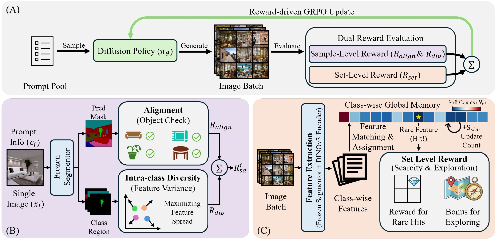
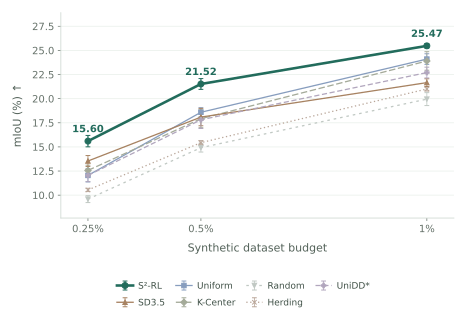
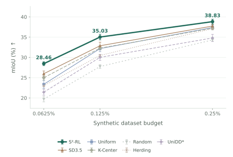
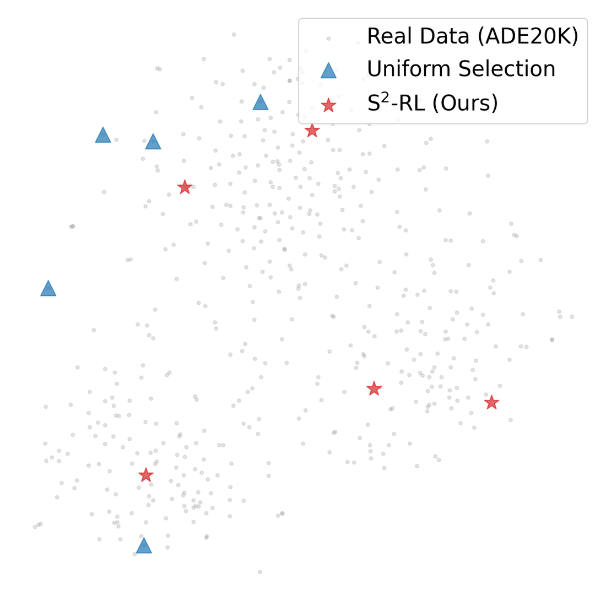

SAMPLE-LEVEL REWARD
Make each sample informative.
Align the image with the requested categories and encourage varied local features within each class.
Generative dataset distillation
† Corresponding author
Learning to generate compact, diverse datasets
for semantic segmentation.
The idea
A compact segmentation dataset needs both informative images and diverse semantic coverage. S2-RL optimizes these two goals together.
We fine-tune a text-to-image diffusion policy with group relative policy optimization (GRPO). A sample-level reward encourages semantic alignment and intra-class feature diversity. A set-level reward encourages exploration of underrepresented semantic prototypes. The resulting images receive teacher-generated pseudo-labels and form a small training set for downstream segmentation models.
While dataset distillation has advanced substantially in image classification, extending it to semantic segmentation remains challenging. Pixel-wise gradient unrolling is computationally expensive, and mask-conditioned generative approaches depend on existing spatial layouts. S2-RL formulates generative semantic segmentation dataset distillation as reward-guided diffusion policy optimization. At the sample level, it encourages prompt alignment and intra-class feature diversity. At the set level, a contextual bandit formulation rewards coverage of underrepresented semantic prototypes. Experiments on ADE20K and COCO show consistent gains over the evaluated selection and generative baselines across the reported data budgets.
01 / The samples
Explore the paper's paired examples and their predicted segmentation maps.
sky, tree, stone, bridge, lake
Same text conditioning, different generated scenes. Examples from Figure 4.
02 / The method
Reward each sample for its content, and each set for what it covers.

SAMPLE-LEVEL REWARD
Align the image with the requested categories and encourage varied local features within each class.
SET-LEVEL REWARD
Track class-specific semantic prototypes in a global memory and reward exploration of underrepresented modes.
All synthetic baselines use the same dataset-specific pseudo-label teacher and downstream evaluation protocol.
03 / The evidence
Consistent gains across both datasets and all six evaluated budgets.


Downstream model: SegFormer-B5 · mIoU (%) ↑ · 5 dataset groups × 5 training runs. Error bars reproduce the manuscript's reported ± values. Data budgets are displayed as percentages.
UniDD* denotes the reproduced UniDD-inspired baseline. All values are from the paper's main tables.
Download table dataAblation study
Rewards are added cumulatively to the SD3.5 baseline.
mIoU (%) ↑ · Same downstream model and budget for all four configurations.
Beyond a single sample
Set-level feedback encourages the generator to cover diverse semantic modes. The paper's class-wise t-SNE visualizations compare real data, uniform selection and S2-RL at the 1% ADE20K budget.
Feature-space views from Figure 3; quantitative performance is reported above.

04 / Independent evaluation
Measure where classes appear, which classes coexist, and how they relate in space.
Scroll the chart to compare coverage/recall and precision →
The same frozen OneFormer annotates constructed sets and held-out real images: 2,000 ADE20K and 5,000 COCO references. Regions smaller than 0.1% of an image are excluded. Occupancy and geometry use fixed real-reference local support, macro-averaged over eligible classes or pairs. These diagnostics measure set coverage; they are separate from downstream mIoU.
The results do not imply improvement in every form of diversity. Uniform has stronger generic feature coverage; Vendi and micro-averaged precision show mixed results. Variation is across stored sets, not independent policy runs.
Download diagnostic data ↓See what the descriptors measure
The first three S²-RL images in the evaluated set, in stored order. Choose two classes to inspect their occupied area and relative position.
Each cell is the class area in that cell, as a percentage of the whole image.
05 / Explore the training data
Explore 868 image–label pairs across both datasets and all three budgets.
Build on this work
@misc{wang2026s2rl,
title={S$^2$-RL: Sample-Set Dual Reinforcement Learning for Generative Semantic Segmentation Dataset Distillation},
author={Haoyu Wang and Fei Zhou and Qingqing Qiu and Lei Zhang and Wei Wei and Chen Ding},
year={2026},
eprint={2610.35491},
archivePrefix={arXiv},
primaryClass={cs.CV},
url={https://arxiv.org/abs/2610.35491}
}